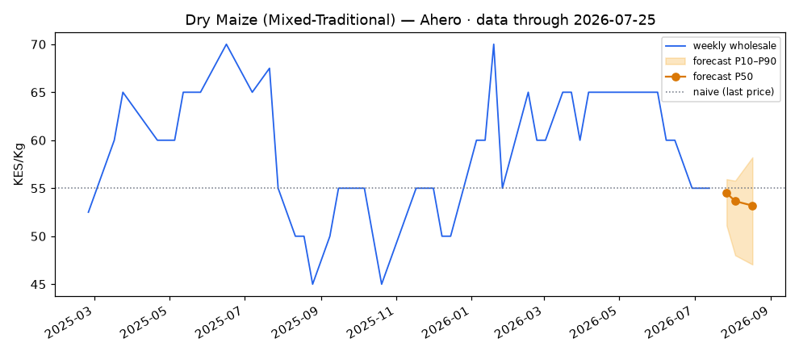
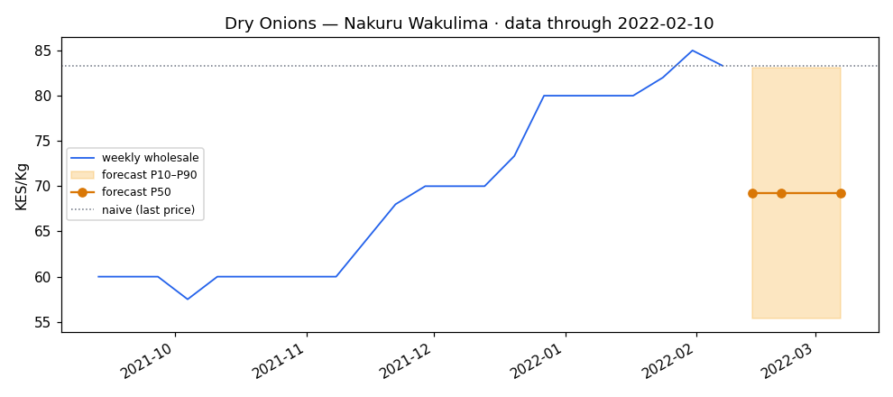
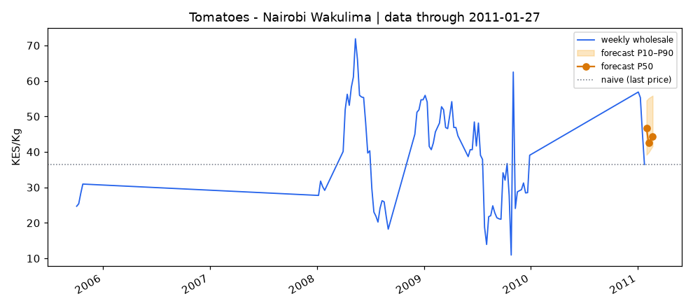
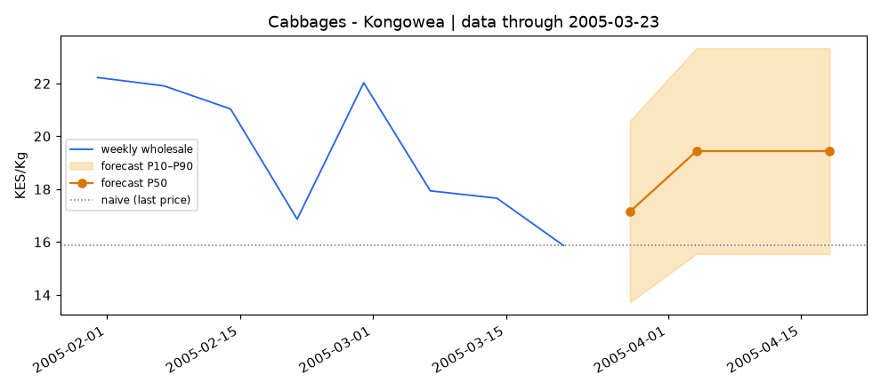

PriceCast
KAMIS farm price forecasts delivered as plain-language SMS for smallholder farmers in Kenya.
Farmers deserve price foresight, not market rumors.




Farmers sell into fast-moving markets with slow, messy information.
- Prices shift by crop, market, and week.
- KAMIS contains useful public market data, but exports are raw, capped, duplicated, and uneven.
- Most farmers need low-bandwidth answers, not a dashboard login.
- A confident wrong forecast can destroy trust.
The farmer question
"Should I sell here this week, wait, or check another market?"
PriceCast turns messy market exports into farmer-ready guidance.
Forecast
Weekly 1, 2, and 4 week price ranges for each commodity and market.
Trust
Confidence tiers, baseline checks, anomaly detection, and honest "not enough data" messages.
Reach
English or Kiswahili SMS, with a Phase 2 path to USSD, API, and dashboard layers.
From KAMIS exports to SMS in one reproducible pipeline.
The product knows when not to forecast.
Model
At least 26 weekly observations, fresh data, and enough evidence for ML.
Seasonal fallback
Some signal exists, but not enough confidence for a model-driven forecast.
Insufficient data
No guess. The SMS points to the nearest covered market when possible.
Backtesting compares the model to "last known price." If the model does not beat the baseline, PriceCast demotes the forecast instead of pretending.
The current demo has real data, real forecasts, and real backtests.
Backtest highlight: Dry Maize, 1 week
About 35% lower error than the naive baseline.
A market-specific forecast becomes a farmer-readable message.
Dry Maize, White Maize - Ahero, Kisumu
Ahero Dry Maize: now 55 KES/kg, expected about 53 KES/kg next week (50-59). Trend: falling.
Claude explains the forecast; it does not invent the forecast.
- The model outputs structured numbers first.
- Claude receives only validated forecast fields.
- The prompt forbids invented prices, dates, and unsupported advice.
- Messages are validated for length and required forecast figures.
- If the API fails, deterministic templates keep the product running.
Design principle
ML predicts. Claude explains. The farmer receives only the useful part.
Start with groups already helping farmers make market decisions.
- County agriculture offices and extension officers.
- Farmer cooperatives and producer groups.
- Grain, onion, tomato, and cabbage value-chain partners.
- SMS and USSD access through Africa's Talking.
Business model options
- Sponsored farmer SMS alerts.
- Paid co-op and county dashboards.
- Forecast API for agribusiness, insurers, and food-security partners.
The demo is already structured as the backend contract for Phase 2.
Built now
- Static KAMIS ingestion.
- Backtesting and confidence tiers.
- Forecast rows in SQLite.
- Charts, report, and SMS text layer.
Next
- Scheduled KAMIS ingestion.
- Africa's Talking USSD and SMS subscriptions.
- FastAPI endpoints for forecasts and history.
- County/co-op dashboard and data-quality monitoring.
Help PriceCast pilot trusted price guidance with real farmers.
- Live or refreshed KAMIS access.
- SMS credits and shortcode setup.
- County or co-op pilot partners.
- Extension officer feedback on language and usefulness.
- Support to expand crop coverage.
PriceCast helps farmers make better market decisions with data they can actually receive, understand, and trust.